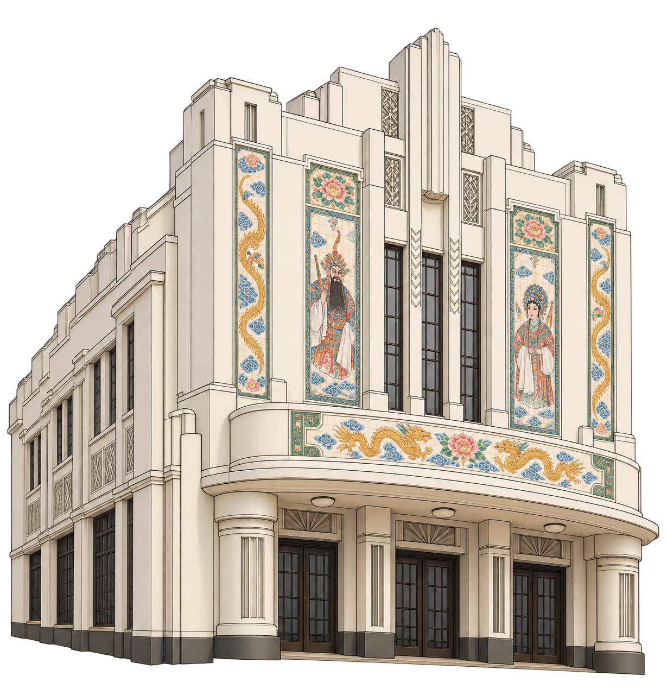
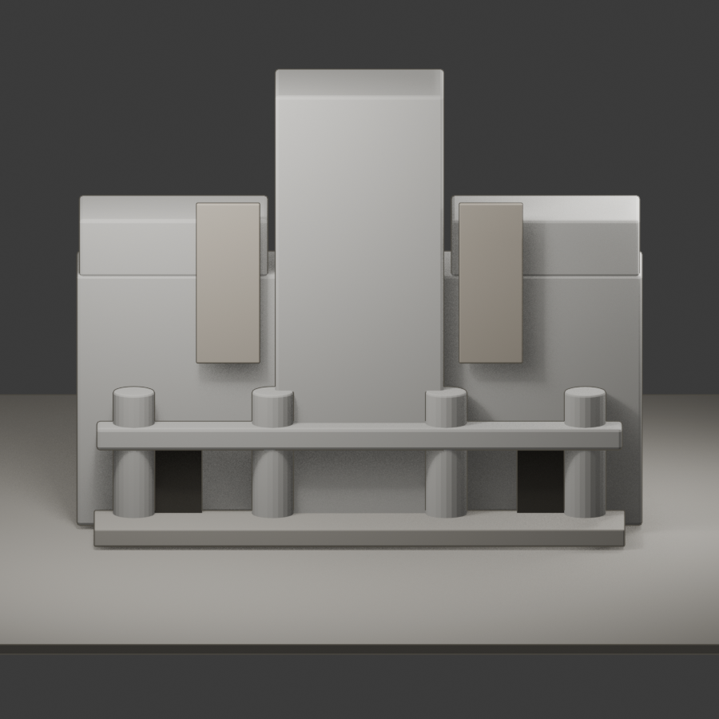

1927–28 / Eu Tong Sen Street
The Majestic
before the films.
A Cantonese opera house, later a cinema, now a repurposed landmark. Drag the reconstruction to study the facade that carried its changing cultural life.
Architecture that performed.
Select a numbered point on the drawing to uncover the details held in its facade.
1927–28Opera house
1938 onwardCinema
2003 onwardRepurposed building
Open visual direction study


Drag building or use orbit control